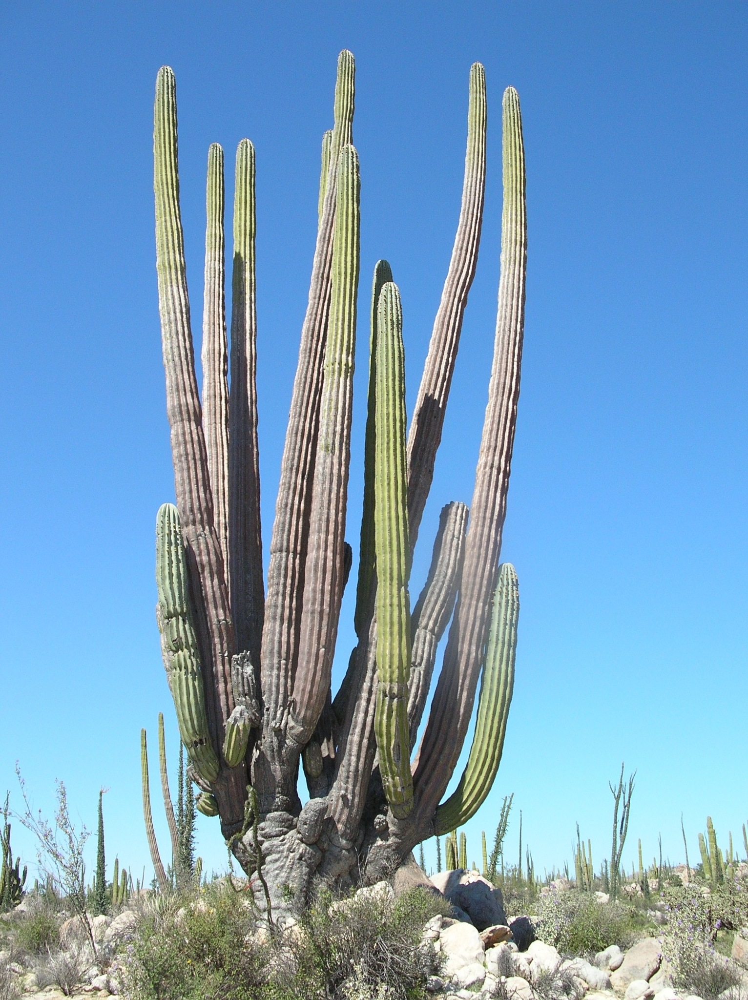

Cardon: Planta Sonorense
Crecimiento
El cardón es uno de los cactus más grandes del mundo, alcanzando alturas que pueden superar los 15 metros en su etapa adulta, aunque su crecimiento es relativamente lento. Este cactus tiene un tronco grueso que está cubierto por una piel gruesa que ayuda a retener agua, permitiéndole sobrevivir en el desierto, donde las precipitaciones son escasas. Su sistema de raíces es profundo, lo que le permite acceder a la humedad subterránea. Los tallos del cardón son de color verde, con costillas prominentes y espinas en la parte superior de cada costilla. Este cactus tiene la capacidad de almacenar grandes cantidades de agua en su tronco, lo que le permite sobrevivir durante largos períodos de sequía.
Flores
El cardón produce grandes flores blancas o rosadas, generalmente en la primavera, justo después de las primeras lluvias. Las flores son nocturnas, lo que significa que se abren al caer la noche y se cierran durante el día. Estas flores son fragantes y, al igual que otros cactus, son polinizadas por murciélagos y polillas nocturnas. El proceso de polinización es crucial para la producción de los frutos del cardón, que son de forma cilíndrica, jugosos y comestibles, aunque las semillas dentro de los frutos son muy duras.
Historia
El cardón (Pachycereus pringlei) es una planta emblemática del desierto de Sonora, especialmente en regiones como Hermosillo, y tiene una historia profunda que se remonta a las culturas indígenas que habitan esta región. Desde tiempos prehispánicos, pueblos como los seris, yaquis y mayos han utilizado el cardón como una fuente vital de alimento, materiales y medicinas. Sus frutos comestibles eran una fuente importante de hidratos de carbono y agua, especialmente durante los largos períodos de sequía, y aunque las semillas son duras, el fruto era consumido y almacenado para los meses más secos. Además, los troncos secos del cardón eran utilizados en la construcción de refugios y viviendas tradicionales, mientras que las espinas se aprovechaban para fabricar cuerdas y canastos.